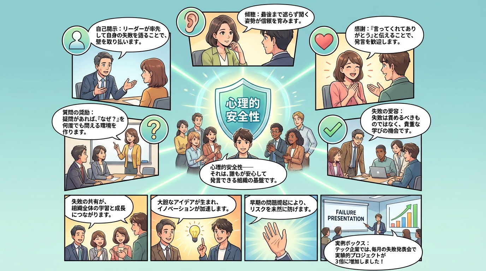
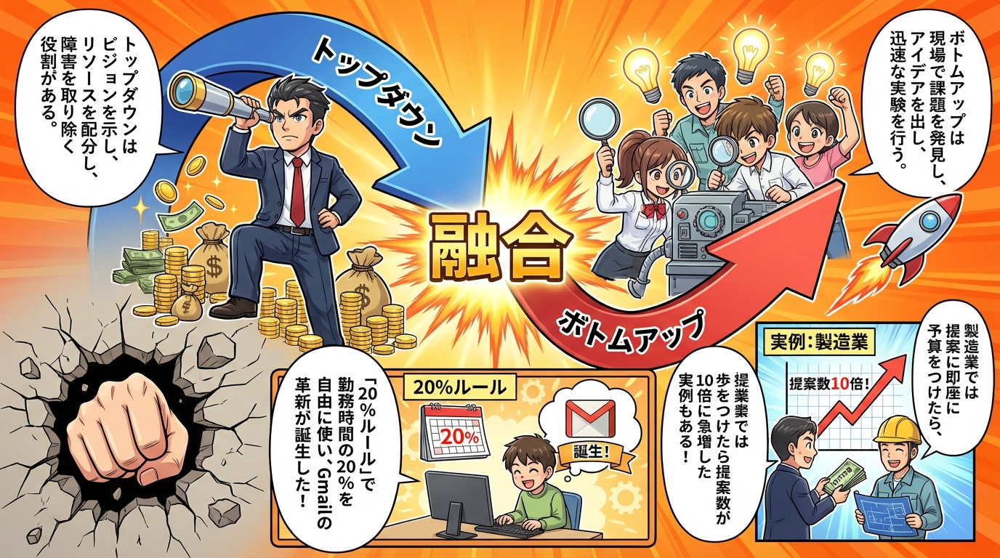
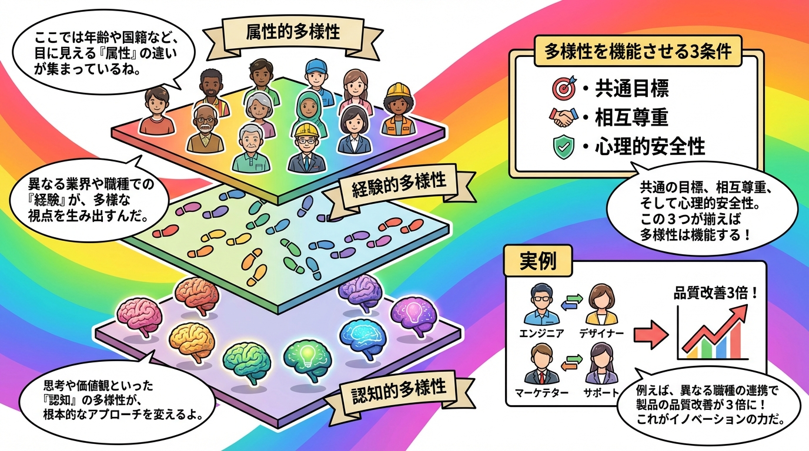
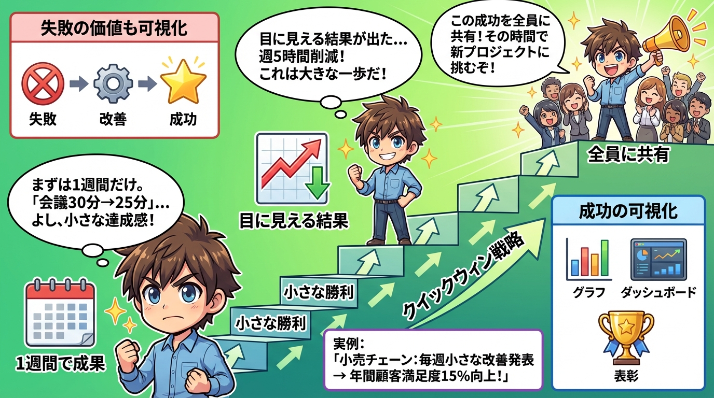
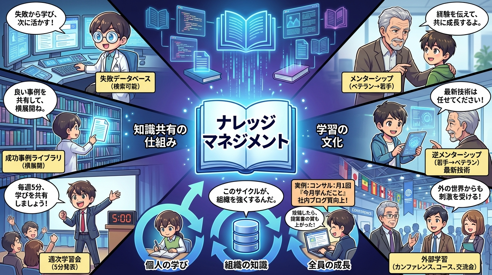
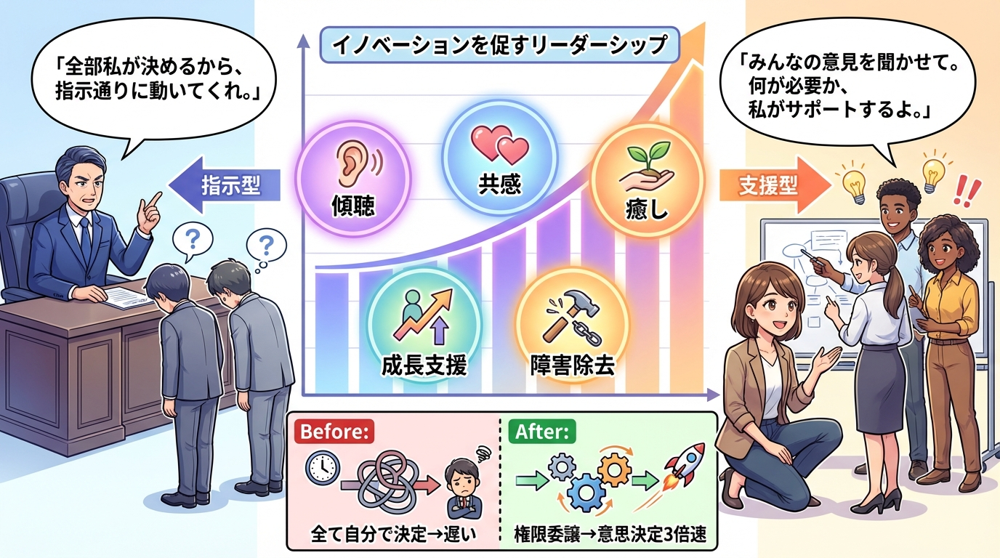

第1章：心理的安全性
Googleの調査で判明した成功チームの最重要要素。心理的安全性を高める5つの行動（傾聴、感謝、失敗の受容、質問の奨励、自己開示）を視覚化。

第2章：融合のメカニズム
経営層のビジョンと現場の創造性を融合させる仕組み。Googleの20%ルールなど、両方の強みを活かす組織設計を解説。

第3章：多様性の力
属性的・経験的・認知的多様性の3次元。同質性の罠を避け、多様性を機能させる条件（共通目標、相互尊重、心理的安全性）を図解。

第4章：クイックウィン戦略
大きな変革より小さな勝利を積み重ねる。1週間で成果を出し、可視化し、全員で共有するサイクルで組織文化を変える手法。

第5章：ナレッジマネジメント
個人の学びを組織の資産に変える。失敗データベース、成功事例ライブラリ、週次学習会など、知識共有の実践的な仕組み。

第6章：サーバントリーダーシップ
指示型から支援型へ。傾聴、共感、癒し、成長支援、障害除去の5原則と、権限委譲でチームを自走させるリーダーシップ。
📚 4コマ漫画で理解する

保守的な組織が、リーダーの自己開示によって心理的安全性の高い組織に変わるストーリー。「失敗OK」と明言し、社長自身が失敗談を語ることで、全員が発言できる文化が完成します。